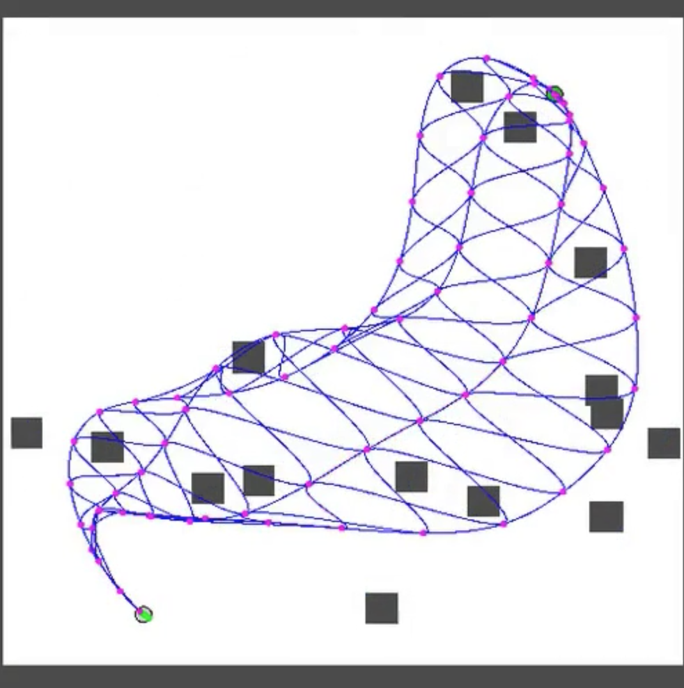

Hi, my name is Sahit! I'm a Ph. D student at MIT in the Learning and Intelligent Systems Group, advised by Leslie Pack Kaelbling and Tomás Lozano-Pérez. Prior to coming to MIT, I did my undergrad at Georgia Tech, where I was advised by Byron Boots in the Robot Learning Lab. I was also lucky enough to spend some time interning at the Robotics Lab at DeepMind, the Human-Centered Robotics Lab at UW, and the Search-Based Planning Lab at CMU. Email / CV / Scholar / Github / Goodreads / Letterboxd / Twitter |
{kind=link}
|
I am interested in making robots reason under uncertainty, especially for tasks that involve making and breaking contact with the environment. My research focuses on applying ideas from motion planning, geometry, and machine learning to this end in the context of robot manipulation. |

|
Bi-Level Belief Space Search for Compliant Part Mating Under Uncertainty
Sahit Chintalapudi, Leslie Pack Kaelbling, Tomás Lozano-Pérez WAFR, 2024 arXiv We consider assembly tasks where the relative configuration parts is unknown due to sensing error. We formulate this problem as a search in Belief Space and introduce a Bi-Level Planner that reasons over both gripper trajectory and robot compliance. |
|
|
Effective footstep planning using homotopy-class guidance
Vinitha Ranganeni, Sahit Chintalapudi, Oren Salzman, Maxim Likhachev Artificial Intelligence, 2020 arXiv We introduce a heuristic which encourages A* search to stay within a homotopy class extracted from human demonstration, which rapidly improves search runtime. |
|

|
Online Motion Planning Over Multiple Homotopy Classes with Gaussian Process Inference
Keshav Kolur*, Sahit Chintalapudi* , Byron Boots, Mustafa Mukadam IROS, 2019 arXiv We show that sampling factor graphs can be used to recover diverse robot trajectories, which can be switched between in realtime for environments with moving obstacles. |
|
Website Template from Jon Barron, but egregious design choices were made at Sahit's prerogative. |